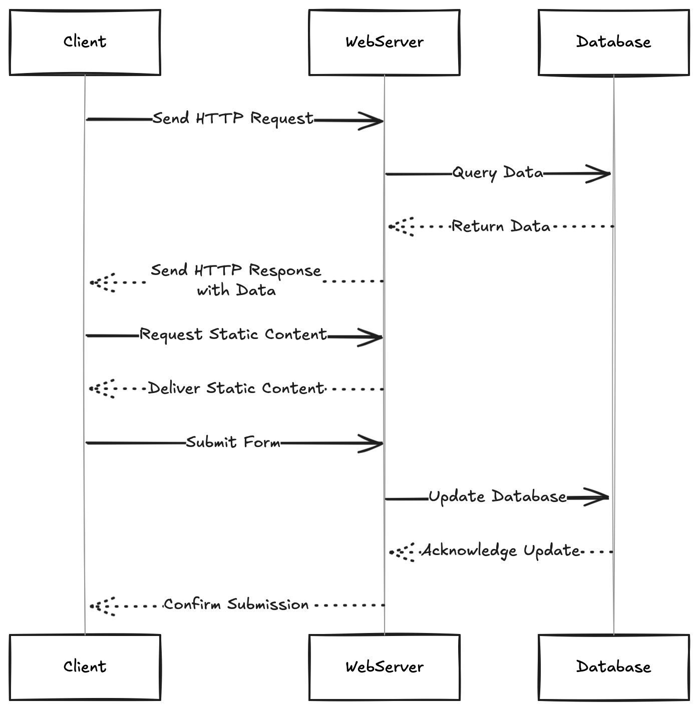

Como funciona a Web?
A web—World Wide Web—é um sistema complexo de computadores interligados que permite a comunicação e a partilha de informações através de uma rede global. Cada computador funciona como um nó na rede, e a comunicação entre eles é facilitada por protocolos específicos.
Aquilo a que chamamos de “web” é, na verdade, uma rede de computadores que se comunicam entre si utilizando um protocolo específico (HTTP) e que partilham informações através de documentos interligados (HTML). A web é uma parte fundamental da Internet, mas não é a única forma de comunicação online. Existem outras redes e protocolos que também permitem a troca de informações, como e-mail, FTP (File Transfer Protocol) e muitos outros.
A Web foi proposta em 1989 por Tim Berners-Lee, um cientista da computação britânico, enquanto trabalhava no CERN (Organização Europeia para a Pesquisa Nuclear). A ideia era criar um sistema que permitisse aos investigadores partilhar informações de forma fácil e rápida. Desde então, a Web evoluiu significativamente, tornando-se uma plataforma global para comunicação, comércio, entretenimento e muito mais.
APRENDER MAIS no artigo World Wide Web na Wikipedia.
A internet por sua vez é a rede que suporta a web, tendo os primeiros nós sido estabelecidos em 29 de Outubro de 1969 (e o sistema crashou ao fim do envio de 2 carateres). A internet é uma rede de redes, composta por milhões de computadores interligados que comunicam entre si através de protocolos padronizados. A web é apenas uma das muitas aplicações que utilizam a infraestrutura da internet.
APRENDER MAIS no artigo Internet na Wikipedia.
Estrutura Básica da Web
A web é composta por dois componentes principais:
- Clientes: Dispositivos que solicitam informações, como computadores, smartphones e tablets.
- Servidores: Computadores que armazenam e fornecem informações, como sites e aplicações web.
Arquitetura Cliente-Servidor
A comunicação entre clientes e servidores é feita através de um protocolo chamado HTTP (Hypertext Transfer Protocol). Quando um cliente solicita uma página web, o servidor responde enviando os dados necessários para exibir a página. Este processo envolve várias etapas ilustradas na figura:

- O cliente envia um pedido HTTP para o servidor.
- O servidor processa o pedido e organiza os dados necessários (pode aceder a uma base de dados ou processar um arquivo HTML, CSS, JavaScript ou outros recursos multimedia).
- O servidor envia uma resposta HTTP de volta ao cliente, contendo os dados solicitados.
- O cliente recebe a resposta e renderiza a página web no browser.
- Outros exemplos incluem o envio de formulários. Por exemplo quando fazemos login num site, o cliente envia os dados do formulário para o servidor, que processa a informação (regista na Base de Dados) e responde com uma página de confirmação ou redirecionamento.
Endereços Web e URLs
Os endereços web, conhecidos como URLs (Uniform Resource Locators), são usados para identificar recursos na web.
O URL pode ser algo como https://www.exemplo.com/pagina.html?id=123, onde:
- Protocolo: Indica o protocolo usado (por exemplo,
http://ouhttps://). - Domínio: O nome do site (por exemplo,
www.exemplo.com). - Caminho: O caminho para o recurso específico (por exemplo,
/pagina.html). - Parâmetros: Informações adicionais que podem ser passadas na URL (por exemplo,
?id=123).
Mas como é que o browser sabe onde encontrar o servidor associado a um domínio? É aqui que entra o DNS.
DNS (Domain Name System)
O DNS é um sistema que traduz nomes de domínio legíveis por humanos (como www.exemplo.com) em endereços IP numéricos (como 192.134.1.4). Isso permite que os clientes acedam aos servidores usando nomes amigáveis, em vez de ter que memorizar números complexos.
O processo de resolução de nomes envolve várias etapas:
- O cliente envia uma consulta DNS para um servidor DNS.
- O servidor DNS verifica se tem o endereço IP correspondente ao nome de domínio solicitado.
- Se não tiver, ele encaminha a consulta para outros servidores DNS até encontrar o endereço IP correto.
- O servidor DNS retorna o endereço IP ao cliente, que pode então estabelecer uma conexão com o servidor.
APRENDER MAIS no artigo DNS na MDN.
Respostas possíveis do servidor HTTP
As respostas do servidor HTTP são categorizadas por códigos de estado, que indicam o resultado do pedido. Alguns códigos mais comuns incluem:
- 200 OK: O pedido foi bem-sucedido e o servidor retornou os dados solicitados.
- 301 Moved Permanently: O recurso foi movido permanentemente para outro URL.
- 302 Found: O recurso foi encontrado, mas está temporariamente noutro URL.
- 403 Forbidden: O cliente não tem permissão para aceder ao recurso solicitado.
- 404 Not Found: O recurso solicitado não foi encontrado no servidor.
- 400 Bad Request: A solicitação do cliente é inválida ou está mal construída.
- 500 Internal Server Error: Ocorreu um erro no servidor ao processar o pedido.
APRENDER MAIS no artigo HTTP Status Codes na MDN.
Conteúdos enviados pelos servidores
Os servidores web enviam diferentes tipos de conteúdos para os clientes, dependendo do tipo de recurso solicitado. Os tipos mais comuns incluem:
- HTML: O conteúdo principal de uma página web, que define a estrutura e o layout.
- CSS: Folhas de estilo que definem a aparência visual da página.
- JavaScript: Scripts que adicionam interatividade e funcionalidades dinâmicas à página.
- Imagens: Arquivos de imagem (como JPEG, PNG, GIF) que são exibidos na página.
- Vídeos e Áudio: Conteúdos multimédia que podem ser incorporados na página para melhorar a experiência do utilizador.
- JSON: Formato de dados usado para troca de informações entre o cliente e o servidor, especialmente em aplicações web dinâmicas.
- XML: Outro formato de dados usado para troca de informações, embora menos comum que o JSON em aplicações web modernas.
- Arquivos de fontes: Tipos de letra personalizados que podem ser usados na página para melhorar a tipografia.
NOTA: A maioria dos sites modernos utiliza uma combinação desses tipos de conteúdo para criar experiências ricas e interativas. O HTML define a estrutura, o CSS estiliza a aparência e o JavaScript adiciona funcionalidades dinâmicas.